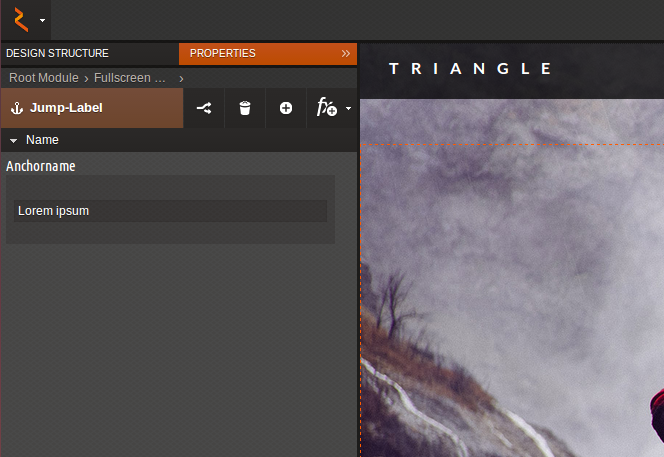

Tutorials¶
Your First Module¶
Find an unique ID for your module. Preferably prefix your module ID with a vendor name of your choice (e.g. mycompany_) to avoid name conflicts.
Note
You can override all default rukzuk modules (vendor prefix “rz_”) if you name your new customized module with the origin module ID. When you remove your derived module, the original module will come into play again.
Create a module directory following this recommendation.
Start with a simple module:
1 2 3 4 5 6 7 8 9 10 11 12 13 14 15 16
<?php namespace Rukzuk\Modules; class mycompany_textfield extends SimpleModule { /** * @param $renderApi * @param \Render\Unit $unit * @param \Render\ModuleInfo $moduleInfo */ public function renderContent($renderApi, $unit, $moduleInfo) { echo "<div><span>My Text</span></div>"; $renderApi->renderChildren($unit); } } ?>
Now upload the module into your rukzuk space as mentioned below.
Refresh the module repository by clicking the refresh button in the “Module Development” pop-up.
Test your new module.
Advanced Module¶
Follow the steps 1, 2 and 3 from the above instruction to prepare for the advanced module development.
Now we are going to include JavaScript functionality to your new module. In the example below, we utilize the jQuery library.
1 2 3 4 5 6 7 8 9 10 11 12 13 14 15
define(['jquery'], function ($) { return { init: function () { var mycompany = function(element){ var elementId = $(element).prop('id'); alert(elementId); }; $('.mycompany_textfield').on('click', function(){ $(this).addClass('mycompany_class'); mycompany(this); }); }; }; });
You might ask yourself what the “define” stuff does. rukzuk is loading module JavaScript files on demand or dynamically as they are being called when a module is used. To achieve such behavior, rukzuk takes advantage of a third party JavaScript library called require.js.
In your custom.json you need to include the above JavaScript file:
{ "assets":{ "js":[ { "file":"mycompany.js", "type":"module", "mode":"live" } ] } }
Module User Interface¶
The below screen-shot illustrates the user interface of the “rz_anchor” module in edit mode.
These edit mode forms also represent the unit data and can be created straight forward with the built-in module user interface builder. It allows you to add multiple tabs containing form fields, e.g. text input, number slider or image chooser.
Note
Keep in mind that page editing rights are defined on tab-level after inserting the module into a design. Therefore, it is recommended to group form fields into tabs according to their right specific context.
- Follow the steps 1, 2 and 3 from the above instruction.
- Open “Module Development” in the main menu of your rukzuk space
- Double-click on a module to edit
- Switch to the “User Interface” tab

The Variable name must be unique in a module and will be used to access the value of each form field later on.
Note
Some form fields offer the possibility for responsive values. If enabled, a single form field can hold multiple values, one for each screen resolution of the website.
The form configuration will be saved in the file form.json.
Access Unit Data¶
In PHP mycompany_textfield.php¶
1 2 3 4 5 6 7 8 9 10 11 12 13 14 15 16 17 | <?php
namespace Rukzuk\Modules;
class mycompany_textfield extends SimpleModule
{
/**
* @param $renderApi
* @param \Render\Unit $unit
* @param \Render\ModuleInfo $moduleInfo
*/
public function renderContent($renderApi, $unit, $moduleInfo)
{
$anchorName = $renderApi->getFormValue( $unit, 'anchorName' );
echo "<div><span>{$anchorName}</span></div>";
$renderApi->renderChildren($unit);
}
}
?>
|
All declared unit data (see Module User Interface) can be accessed by the following code fragment for example:
$renderApi->getFormValue( $unit, 'anchorName' );
Note
The module can access unit information or data in edit mode as well as in an live environment.
In JavaScript editMode.js¶
1 2 3 4 5 6 7 8 9 10 | define(['jquery', 'CMS'], function ($, CMS) {
return {
init: function () {
$('.mycompany_textfield').on('click', function(){
var unitId = $(this).attr('id');
var anchorName = CMS.get(unitId).formValues.anchorName.value
});
};
};
});
|
All declared unit data (see module “edit mode” editor) can be accessed by the following code fragment for example:
CMS.get(unitId).formValues.anchorName.value
Note
The CMS API is globally available throughout the rukzuk web application while in edit mode. That means the custom module will not be able to consume information or data from the CMS API in an live environment (e.g. live hosting).
Listening to Events in Edit Mode¶
In case you want to react on user events, e.g. do something after the user changed a form value or after the user selected your module, you can do so by extending the JsModule of the default “rz_root” module. Your editMode.js could look like:
1 2 3 4 5 6 7 8 9 10 11 12 13 14 15 | define(['jquery', 'CMS', 'rz_root/notlive/js/baseJsModule'], function ($, CMS, JsModule) {
return JsModule.extend({
// alert when the user changed the form field 'anchorName'
onFormValueChange: function (cfg) {
if (cfg.key === 'anchorName') {
alert(cfg.unitId);
}
},
// alert when the user selects your module
onUnitSelect: function (cfg) {
alert(cfg.unitId);
}
});
});
|
Please have a look at the JS Module API for all available events.
Note
Instead of a complete page reload only the DOM nodes of a module get replaced when the user changes the form values in edit mode. So you have to re-attach listeners on DOM elements on the afterRenderUnit event. If you set your listeners in the initUnit method, the JsModule helper takes care about that.
Dynamic CSS Generation¶
The default “rz_root” module comes with a handy helper for dynamic CSS generation. Based on the form values in the unit data CSS code will be generated. All dynamic CSS logic of a module is handled in the file css.js and is based on the third party JavaScript library AbsurdJS.
Our DynCSS helper takes care about responsive values and media queries as well as selector nesting according to the structure tree: all CSS styles defined in a module can only apply to the module itself and subordinate modules. It also provides a little API e.g. for resolving colors or image URLs.
1 2 3 4 5 6 7 8 9 10 11 12 | DynCSS.defineModule('rz_anchor', function (api, v, context) {
return {
// this gets applied to the module itself
color: api.getColorById(v.cssBackgroundColor),
// these styles are for child elements with the class "anchor"
'& > .anchor': {
textAlign: v.cssVisualHelperValign,
backgroundImage: 'url(' + api.getImageUrl(v.cssBackgroundImage, v.cssBackgroundImageSize) + ')'
}
};
});
|
Note
The variable name of form fields which should trigger CSS re-generation must begin with “css”.
Please refer to the AbsurdJS documentation for further syntax details.
Upload Your Module via FTP¶
You can directly upload your module through FTP. The FTP connection details can be found in the “Module Development” pop-up in your rukzuk space.
Export and Import Your Module¶
To easily use your module in other websites or rukzuk spaces you can use the export and import facility in the “Module Development” pop-up.